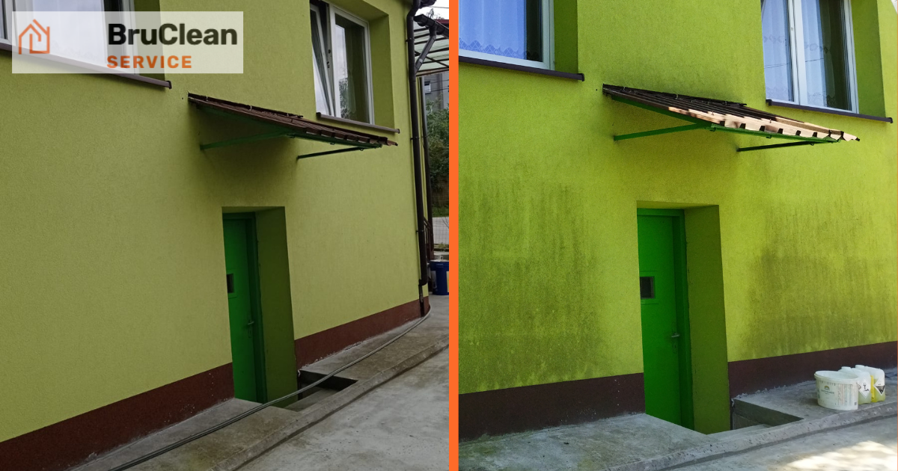

Ile kosztuje mycie elewacji budynku? Co wpływa na cenę
Opublikowano: 25 sierpnia 2026 · BruClean Service Kraków

To jedno z pierwszych pytań, jakie słyszymy od klientów w Krakowie i Małopolsce — i uczciwa odpowiedź brzmi: to zależy. Cena mycia elewacji nie jest jedną stałą kwotą za metr kwadratowy, bo na koszt wpływa kilka niezależnych czynników. Poniżej wyjaśniamy, co realnie kształtuje wycenę.
Co wpływa na cenę mycia elewacji?
- Powierzchnia elewacji — im większy budynek, tym niższy koszt jednostkowy za m², ale wyższa kwota całkowita
- Stopień zabrudzenia — algi, glony i wieloletni nalot wymagają więcej czasu i mocniejszych środków niż świeże zabrudzenie kurzem
- Wysokość budynku i dostęp — mycie z ziemi lub podnośnika kosztuje inaczej niż praca metodą alpinizmu przemysłowego na wysokich elewacjach bez możliwości podjazdu
- Rodzaj tynku — delikatne powłoki (np. elewacje z dociepleniem ETICS) wymagają niższego ciśnienia i więcej czasu pracy
- Dodatkowa impregnacja — jeśli po myciu chcesz zabezpieczyć elewację powłoką hydrofobową, to osobna, dodatkowa pozycja w wycenie
Dlaczego nie podajemy sztywnego cennika online?
Każda elewacja to inna sytuacja — dwa budynki o tej samej powierzchni mogą wymagać zupełnie innego nakładu pracy, jeśli jeden jest regularnie czyszczony, a drugi zaniedbany od kilku lat. Podanie jednej ceny "za m²" byłoby nieuczciwe wobec klienta, dlatego każdą wycenę przygotowujemy indywidualnie — na podstawie zdjęć lub krótkiej wizji lokalnej, zawsze bezpłatnie.
Jak zaoszczędzić na myciu elewacji?
Najprostszy sposób to regularność. Elewacja czyszczona raz w roku wymaga znacznie mniej pracy (a więc kosztuje mniej) niż ta zaniedbana przez kilka sezonów, na której osiadły już głębokie plamy i glony. Impregnacja hydrofobowa wykonana po myciu dodatkowo spowalnia ponowne osadzanie się brudu, dzięki czemu kolejne czyszczenie może być prostsze i tańsze.
Zobacz też pełną ofertę mycia elewacji w Krakowie — metody, zakres prac i przykładowe realizacje.
Chcesz poznać dokładny koszt mycia elewacji swojego budynku?
Zapytaj o darmową wycenę